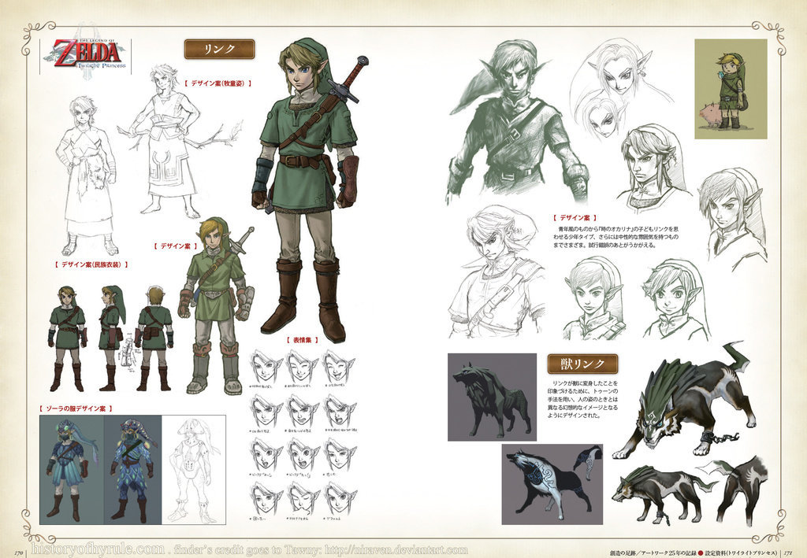
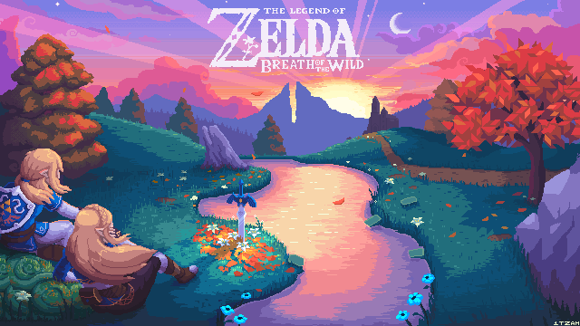

The Legend Of Zelda
The Legend of Zelda ha logrado una notable popularidad acompañada de críticas favorables en la industria de los videojuegos, traducidas en un cuantioso éxito comercial a nivel internacional —hasta abril de 2020 se calculan más de 113 millones de copias vendidas de sus juegos; para las ventas específicas de cada título de la franquicia, véase la sección Comercial. La continuidad cronológica de los juegos ha sido objeto de debate con el transcurso del tiempo, debido a la incertidumbre en la identificación de los vínculos entre ciertos títulos. Nintendo publicó la cronología definitiva de The Legend of Zelda en el libro Hyrule Historia (2011), en la cual se explica que existen tres líneas de tiempo diferentes, las cuales dependen primordialmente de Link.
En 1987 el primer juego había logrado vender un millón de copias y, tras su distribución en otros países, se comercializaron tres millones de copias más. Esto ayudó a incrementar el número de ventas de la consola Nintendo NES, la primera fabricada por Nintendo. Con el transcurso del tiempo, la serie ha obtenido numerosas críticas positivas en la industria de los videojuegos. Así, la prestigiosa revista japonesa Famitsu destacó a Ocarina of Time, The Wind Waker, Skyward Sword y Breath of the Wild como «juegos perfectos», mientras que la mayoría de los otros títulos fueron reconocidos como los mejores estrenos en sus respectivos años de lanzamiento, como en el caso de A Link to the Past —considerado por Game Rankings como el segundo mejor juego de 1992 para la plataforma Super Nintendo y Twilight Princess considerado como el «mejor juego» de 2006 por el sitio web Game Informer.
Resumen de la trama
De acuerdo con la trama central de los juegos de The Legend of Zelda, las diosas Din (ディン Din?), Farore (フロル Faroru?) y Nayru (ネール Nēru?) representadas por el poder, el valor y la sabiduría, crearon el relieve, las formas de vida y las leyes que rigen al mundo. Tras concluir sus labores, dejaron tras de sí la Trifuerza (トライフォース Toraifōsu?), un artefacto compuesto por tres fragmentos triàngulares dorados en cuyo interior depositaron una parte de sus dones. Este quedó en custodia de la diosa Hylia (ハイリア Hairia?),22 en un sitio que pasó a ser referido como el Reino Sagrado, con la esperanza de que un día alguien digno de las cualidades de cada fragmento apareciera para reclamarlo.

Hylia protegió la Trifuerza exitosamente hasta que un día el Heraldo de la Muerte (終焉の者 Shūen no Mono?), rey de los demonios, acompañado de sus hordas de fuerzas malignas, emergió de las profundidades del mundo y causó estragos entre sus habitantes. Para evitar que se apropiara del objeto sagrado, la diosa lo ocultó en una porción de tierra que trasladó al cielo y pasó a ser conocida como Altárea (スカイロフト Sukairofuto?), habitada por los supervivientes de la invasión del Heraldo.
Leer Mas
Universo principal
Cada uno de los videojuegos que conforman la saga (excepto las adaptaciones que tratan acerca del personaje Tingle), tienen como protagonista al héroe Link, personaje que es convocado por el destino a derrotar a Ganondorf, poderoso rey gerudo y principal antagonista. En ocasiones este no aparece en alguno de los juegos, como es el caso de algunos juegos de la consola portátil Game Boy Advance, en donde el villano es sustituido por el hechicero minish Vaati, o por Bellum el «espíritu del mal» en Phantom Hourglass (Nintendo DS), por Dark Link en The Adventure Of Link (Nintendo NES/Game Boy Advance), por la Máscara de Majora en el videojuego del mismo nombre o por el Heraldo en Skyward Sword (Wii).
El principal escenario en el que se desarrollan los eventos de los juegos es el reino de Hyrule, un sitio mágico que posee bosques, montañas, lagos, un desierto, villas y templos antiguos. A su vez, Hyrule está conectado con el Reino sagrado, lugar divino en donde se encuentra la Trifuerza, y tiene una dimensión alternativa y oscura denominada Reino Crepuscular. Si bien cada juego tiene un argumento diferente, todos presentan un mismo factor en común: la lucha épica del «bien contra el mal».
Concepto y diseño
Nintendo quería lanzar un nuevo juego para promocionar el lanzamiento del periférico Famicom Disk System a mediados de los años 1980 y Shigeru Miyamoto, que en aquel momento se encontraba trabajando con su equipo en una entrega de Super Mario Bros. para la Famicom japonesa, comenzó a desarrollar un concepto de «creación y exploración de calabozos» tomando en cuenta la capacidad del nuevo periférico para reescribir datos en la memoria.
No obstante, se dio cuenta de que la exploración de calabozos era la «mejor parte» así que descartó incorporar opciones de diseño para el jugador. En sus propias palabras: «creamos un juego de un solo jugador con calabozo debajo de montañas que rodeaban a la Montaña de la Muerte, pero no podíamos quitarnos ese sentimiento de «¡Quiero jugar en la superficie también! Fue así como agregamos bosques y lagos, y [surgió] la Llanura de Hyrule».
Takashi Tezuka desarrolló la trama y el escenario donde ocurren los sucesos principales de Zelda, con base en libros de fantasía como El Señor de los Anillos, de J. R. R. Tolkien. De acuerdo con Keiki Terui, responsable del resumen de la trama publicado en el manual del primer juego, originalmente se acuñó el término «Montaña de la muerte» para hacer referencia a una narrativa previa basada en batallas medievales. A su vez, la Espada Maestra está inspirada en Excalibur, la cual forma parte del mito artúrico.

Leer Mas
Recepción
Al principio, ni Nintendo ni Miyamoto tenían plena confianza en que The Legend of Zelda llegara a tener notoriedad, ya que «un mundo de espadas y magia no era un concepto popular en esa época».
No obstante, se vendieron más de 6,5 millones de copias del primer juego en todo el mundo. La mitad de esas copias se comercializaron en Norteamérica, continente en donde el éxito del título favoreció a su vez a las ventas de la consola NES.
Fue el primer juego de esta consola en sobrepasar el millón de unidades vendidas.
Para la revista Computer Gaming World, se trató de un lanzamiento especial de Nintendo que influyó en el cambio de mentalidad del público estadounidense, que hasta entonces percibía a las consolas como «meros juguetes recreativos».
Hasta julio de 2021 se han vendido más de 113 millones de copias de todos los títulos que conforman la serie; aproximadamente el 49% de esta cifra corresponde a juegos de consolas de sobremesa, y el restante a los juegos distribuidos para portátiles y para la híbrida Switch.
Del primer grupo, los juegos más vendidos son Twilight Princess 8,6 millones; 1,12 millones de su versión Wii U, 7,26 millones de Wii, y 1,43 millones de GameCube y Ocarina of Time 7,6 millones, la versión original de Nintendo 64.

Leer Mas